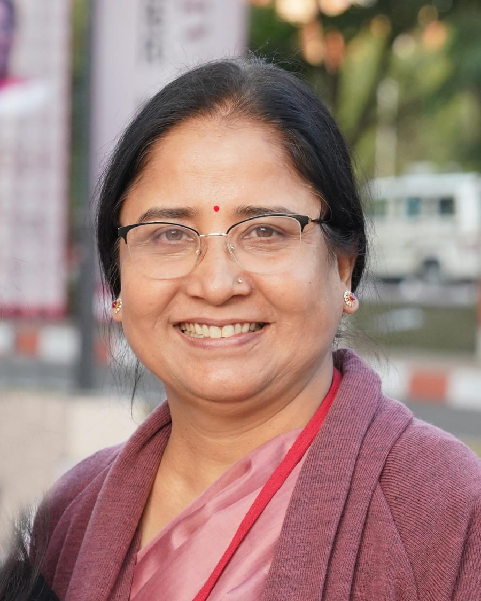

Directed byProf. Surekha Dangwal (Vice-Chancellor)
VC · Patron, Youth Red Cross Doon UniversityDirecting the strategic vision, institutional ethos, and community engagement of the Youth Red Cross unit at Doon University, championing youth volunteerism, humanitarian ethics, and community health preparedness across the state.